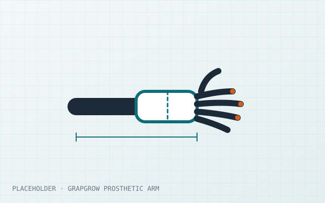
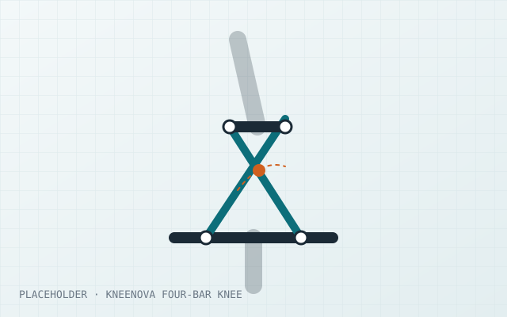
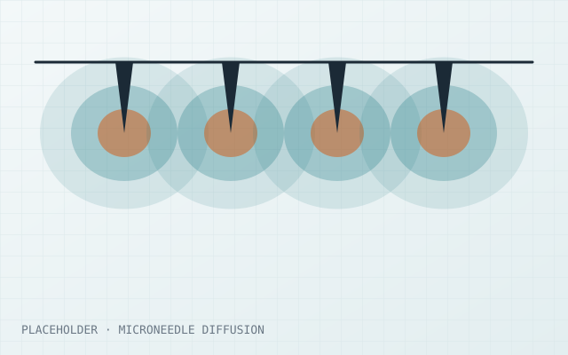
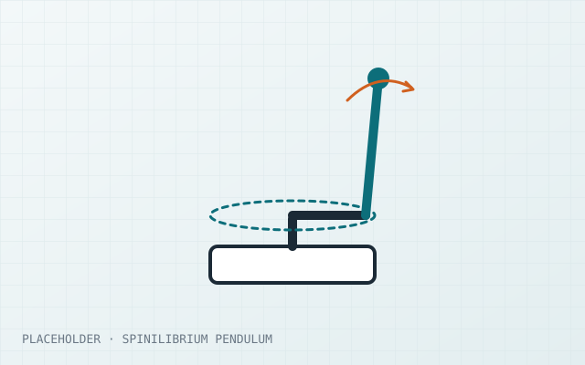
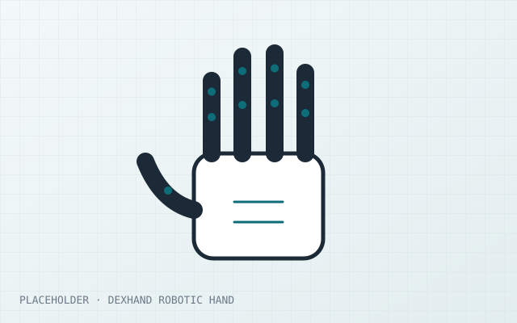
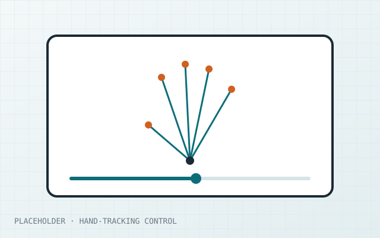

Medical devices
Assistive and rehabilitation devices taken from concept through prototyping, verification and production, designed for manufacturability and regulatory compliance.
I'm Naeem Nairo, a biomedical and mechatronics engineer and Fulbright Scholar at the University of New Haven. I spent 3+ years taking assistive mobility devices from concept to mass production, and now I'm focused on prosthetic hands.
Research focus
I design devices people rely on every day, measure how they perform, and choose the materials that make them safe and durable.
Assistive and rehabilitation devices taken from concept through prototyping, verification and production, designed for manufacturability and regulatory compliance.
Biomedical sensors and signal acquisition, from EMG and temperature sensing to embedded data capture with LabVIEW, NI ELVIS, ESP32 and STM32.
Biomedical polymers and additively manufactured materials, selected and tested for strength, weight and safe contact with the body.
Selected work
Each project starts with a question, uses a model to test it, and ends with a design change.

Prosthetics · Featured
A modular, 3D-printed pediatric prosthetic arm that can be resized by swapping parts as the child grows, so the whole device doesn't need rebuilding.

Prosthetics
A biomimetic prosthetic knee that uses a crossed four-bar linkage to recreate the moving center of rotation of the natural knee.

Modeling · BIOM 6645
A 2D finite-difference model of insulin diffusing from a microneedle array, used to study how needle spacing affects coverage.

Controls
A rotary inverted pendulum balanced by a microcontroller. The controller was designed in Simulink and checked against measured data.

Prosthetics · Open source
Contributions to the open-source DexHand robotic hand: CAD organization, finger mechanism review, and reproducibility notes.

Vision
MediaPipe hand landmarks map how open the hand is to video position. An early test of continuous gesture control.
No projects in this category yet.
Background
Three years of industry product design, now applied to graduate research in biomedical engineering.
University of New Haven · New Haven, CT
University of New Haven, Tagliatela College of Engineering · Fulbright Scholar
Coursework: Biomedical Polymers, Biomedical Sensors and Instrumentation, Biostatistics, Biomechanics, Signal Analysis.
AHL Logics
AHL Logics
Palestine Polytechnic University
Coursework: Mechanical Design, Material Science, Control Systems, Manufacturing Processes, Mechatronic Systems, Thermodynamics.
Skills
The tools and methods I use to take a device from concept to a tested, manufacturable product.
Embedded & robotics
Modeling & data
Web
Credentials
Contact
I'm applying to PhD programs in robotics and biomedical engineering, and I welcome conversations with faculty and labs working on prosthetics and dexterous manipulation.